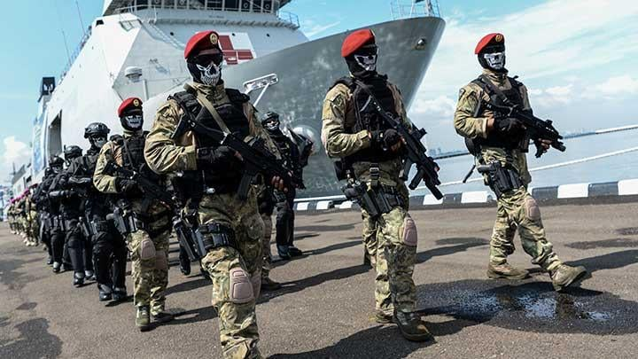

HSI Boarding School Purworejo
website Profil sederhana - Kelas X
Pengantar
Selamat datang di website profil sederhana ane. Situs ini berisi biodata,hobi,dan cita-cita ane sebagai santri HSI Boarding School Purworejo. Silahkan jelajahi halaman biodata untuk mengenal ane.
Avatar Favorit
Berikut ini avatar dari internet yang menggambarkan cita-cita ane:
Cita-cita ane insyallah menjadi TNI AL seperti pakde saya (Tomy basta)
ane tertarik karena dalam kehidupan TNI itu diajarkan untuk